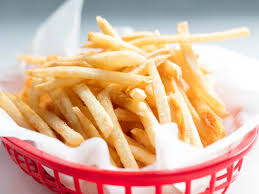

Danny's Pizzeria Fries
Each Type of Fries
At Danny's Pizzeria, we serve up four delicious varieties of fries to satisfy every craving! Our "Original Fries" are golden, crispy, and perfectly salted for a classic side. For a bold kick, try our "Chili Cheese Fries", loaded with hearty chili and melted cheese for the ultimate comfort food. If you love rich flavors, our "Garlic Parmesan Fries" are tossed in savory garlic butter and topped with grated parmesan. And for a sweet and savory twist, our "Sweet Potato Fries" offer a crispy, caramelized bite that pairs perfectly with any meal. No matter your choice, our fries are the perfect complement to your pizza feast!
Our Original Fries
Our "Original Fries" are a timeless favorite, made from high-quality potatoes and cooked to crispy, golden perfection. Lightly seasoned to enhance their natural flavor, these fries have the perfect balance of a crunchy exterior and a soft, fluffy inside. Whether you're enjoying them as a side to your favorite pizza or dipping them in ketchup, ranch, or cheese sauce, they always hit the spot. Simple yet delicious, these are a must-have for any meal!
Our Chili Cheese Fries
Our "Chili Cheese Fries" are the ultimate comfort food, packed with bold flavors and hearty goodness. We start with a crispy bed of golden fries, then smother them in rich, savory chili and top it all off with a generous layer of melted cheese. Every bite is a perfect mix of crunchy, cheesy, and meaty goodness. Whether you're sharing with friends or indulging on your own, these loaded fries are a deliciously satisfying treat!

Our Garlic Parmesan Fries
Our "Garlic Parmesan Fries" are a flavorful twist on a classic favorite. Crispy, golden fries are tossed in a rich garlic butter blend and topped with freshly grated Parmesan for the perfect balance of savory and cheesy goodness. Each bite is packed with bold flavor, making them an irresistible side or snack. Whether you enjoy them on their own or paired with your favorite pizza, these fries are a must-try for garlic and cheese lovers alike!

Our Sweet Potato Fries
Our "Sweet Potato Fries" offer a deliciously unique twist on a classic side. These crispy, golden fries are made from tender sweet potatoes, bringing a perfect balance of natural sweetness and savory flavor. With a crispy exterior and soft, melt-in-your-mouth interior, they’re a satisfying and slightly healthier option. Whether enjoyed on their own or paired with a dipping sauce, these are the perfect complement to any meal!

Contact Us
Phone: 705-725-5959
Email: DannysPizzeria@gmail.ca
Locations: Main Location: 100 Pizza Street, Barrie, ON Branch Location: 250 Pepperoni Street, Barrie, ON
Operating Hours: Monday - Friday: 11am - 11pm Saturday: 10am - 10pm Sunday: 11am - 9pm
Social Media:
Facebook: @DsPizzeria
Instagram: @DannysPizzeria
Twitter: @DSPIZZERIA
For more information or your looking to order via delivery or pickup, feel free to reach out via phone, email, or drop by one of our locations!